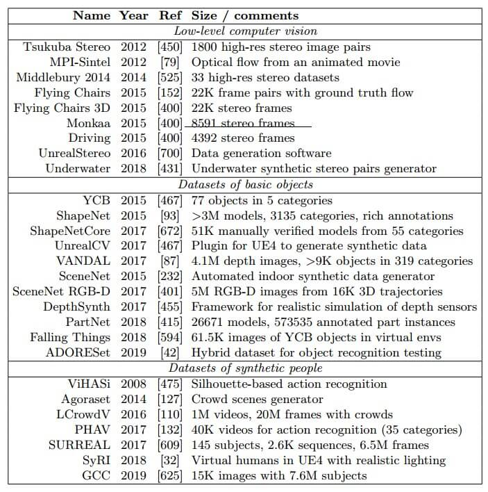
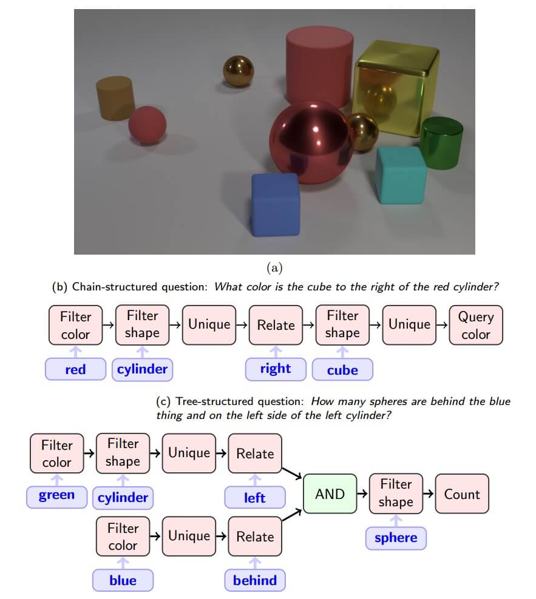
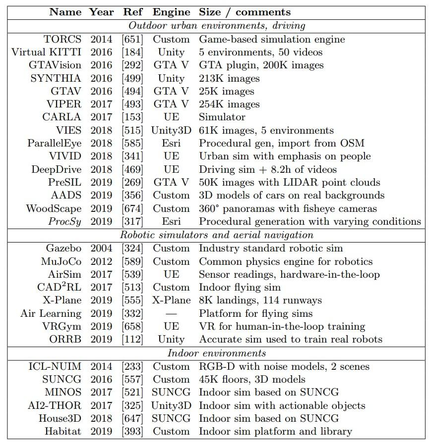

资源
全文
Abstract
合成数据是一种越来越流行的用于训练深度学习模型的工具，尤其是在计算机视觉领域，也在其他领域。在这项工作中，我们试图对合成数据的开发和应用的各个方向进行全面的调查。
-
讨论了基本计算机视觉问题的合成数据集，包括：
- 低级（如光流估计）和高级（如语义分割），室外和城市场景（自动驾驶）、室内场景（室内导航）、空中导航、机器人模拟环境的合成环境和数据集，合成数据在计算机视觉之外的应用（在神经编程、生物信息学、NLP 等方面）；
- 调查了改进合成数据开发和生成合成数据的替代方法（如 GANs）的工作。
-
详细讨论了合成数据应用中不可避免地出现的合成到实域自适应问题，包括使用基于 GAN 的模型进行合成到实细化，以及在没有显式数据转换的情况下在特征 / 模型级别进行域自适应。
-
转向合成数据的隐私相关应用，并回顾了生成具有差异隐私保障的合成数据集的工作。
-
强调了合成数据研究中最有希望的进一步工作方向。
1 Introduction
-
处理分割数据集成本很高。使用合成数据降低数据集获取成本。
- 虽然 3D 建模仍然主要是手工劳动，但这是一次性投资，因此可以获得潜在的无限数量的像素完美标记数据：不仅是 RGB 图像和分割图，还有深度图像、从不同视点生成的立体对、点云、合成视频剪辑和其他模式。
-
现代人工智能的许多问题都归结为数据不足：要么可用的数据集太小，要么通常情况下，即使捕获未标记的数据相对容易，手动标记的成本也高得令人望而却步。合成数据是解决数据问题的重要方法，可以从头开始生成人工数据，也可以使用先进的数据处理技术生成新颖多样的训练示例。
-
合成数据集出现的问题：最重要的是域转移问题：如下图所示，合成图像看起来与真实图像并不完全一样，必须使其尽可能逼真（合成数据研究中的一个常见主题是真实感是否真的有必要；我们在本次调查中会多次遇到这个问题）
对合成数据作一些一般性的评论：
-
在训练过程中，可以使用软件合成数据生成器生成合成数据，并将其提供给机器学习模型，从而减少巨大数据集的需要。
-
虽然合成数据是一个新兴领域，但据我们所知，该领域没有令人满意的总体综述，这是我们撰写这项调查的主要动机。
-
区分合成数据 synthetic data 和数据扩充 data augmentation；
- 数据扩充 data augmentation是一组旨在修改真实数据而不是创建新的合成数据的技术。
- 但在本次调查中，我们专注于合成数据 synthetic data，而不是扩增。诚然，它们之间的界限是模糊的，这里讨论的一些技术可以被归类为 “smart augmentation”。
-
注意到合成数据在机器学习中的自然应用：在受控的合成环境中测试假设并比较方法和算法。
在调查中，我们涵盖了在机器学习中使用合成数据的三个主要方向；我们将讨论这三个方面，下面我们将参考调查中与这些方向相关的具体部分。
-
使用合成的数据集直接训练机器学习模型。这是计算机视觉中经常采用的方法，本次调查的大部分内容都致力于这种方法的变体。特别是，可以：
- 在合成数据上训练模型，并打算在真实数据上使用它们。
- 训练（通常是生成的）模型，这些模型改变（细化）合成数据，使其更适合训练；
-
使用合成数据来扩充现有的真实数据集，使得得到的混合数据集更好地用于训练模型。在这种情况下，合成数据通常用于覆盖在真实数据集中没有充分表示的数据分布部分，主要目的是减轻数据集的偏差。合成数据可以：
- 与例如基于 CGI 的计算机视觉方法单独生成。
- 计算机产生图像（英文：Computer-generatedimagery，缩写：CGI）
- 在生成模型的帮助下从现有的真实数据中生成。
- 与例如基于 CGI 的计算机视觉方法单独生成。
-
使用合成数据来解决隐私或法律问题，这些问题使使用真实数据变得不可能或困难重重。这与某些特定的应用领域尤其相关，其中我们将讨论：
- 医疗保健中的合成数据，不仅限于成像，还扩展到医疗记录等。
- 金融和社会科学中的合成数据，直接应用很难，但与隐私相关的数据确实开始出现；
- 金融和社会科学中的合成数据，直接应用很难，但与隐私相关的数据确实开始出现；
调查组织如下：
-
第 2 节介绍了基本计算机视觉问题的合成数据集和结果，包括
- 低级别问题，如
- 光流或立体视差估计（第 2.1 节）
- 基本高级问题，如
- 对象检测或分割（第 2.2 节）
- 与人类相关的合成数据（第 2.3 节）
- 字符和文本识别（第 2.4 节）
- 视觉推理问题（第 2.5 节）。
- 低级别问题，如
-
在第 3 节中，我们继续研究更类似于全尺寸模拟环境的合成数据集，包括
- 室外和城市环境（第 3.1 节）
- 室内场景（第 3.2 节）
- 机器人的合成模拟器（第 3.3 节）
- 自主飞行（第 3.4 节）
- 作为模拟环境的计算机游戏（第 3.5 节）。
-
第 4 节专门讨论合成数据的其他应用领域，包括
- 神经编程（第 4.1 节）
- 生物信息学（第 4.2 节）
- 自然语言处理（第 4.3 节）。
-
第 5 节讨论了旨在改进合成数据生成的研究：
- 领域随机化（第 5.1 节）
- 基于 CGI 的生成方法的开发（第 5.2 节），通过“剪切和粘贴”真实数据样本部分产生的合成数据（第 5.3 节），以及通过生成模型直接生成合成数据（5.4 节）。
-
第 6 节处理了我们上面讨论的合成到实域的自适应问题；这里有许多方法可以广泛分为合成到真实的精化，其中
- 领域自适应模型用于使合成数据更真实（第 6.1 节），以及特征 / 模型级别的领域自适应，
- 其中模型和 / 或训练过程是自适应的，而不是数据本身（第 6.2 节）；
- 讨论了控制和机器人领域自适应（第 6.3 节）和医学成像（第 6.4 节）的案例研究。
-
第 7 节专门讨论了合成数据的隐私方面：
- 第 7.1 节介绍了差异隐私
- 第 7.2 节展示了如何生成具有差异隐私保障的合成数据
- 第 7.3 节介绍了金融和相关领域中私人合成数据的案例研究
-
第 8 节中专门介绍了与合成数据相关的最有希望的进一步工作方向：
- 合成数据的程序生成（第 8.1 节）
- 关闭生成反馈回路（第 8.2 节）
- 将领域知识引入领域自适应（第 8.3 节）
- 使用易于在合成数据集中获得的附加模式改进领域适应模型（第 8.4 节）。
-
第 9 节总结了本文。
2 Synthetic data for basic computer vision problems
基本计算机视觉问题的合成数据
概述了在计算机视觉中使用合成数据的几个方向。

2.1 Low-level computer vision
低级计算机视觉问题特别包括光流估计，即估计沿图像的表观运动速度的分布，立体图像匹配，即从不同视点找到同一场景的两个图像的点之间的对应关系，背景减法，等等。
Dosovitsky 等人从 3D 椅子模型的公共数据库中提出了一个名为 “Flying Chairs” 的大型合成数据集，将其添加到真实背景之上，以训练基于 CNN 的光流估计模型。
在最近的一项工作中，Mayer 等人概述了用于低级计算机视觉的不同合成数据集，并从训练光流模型的角度对它们进行了比较。他们得出了有趣的结论：
- 对于低水平视觉合成数据，不一定要逼真，Flying Chairs 效果很好；
- 最好结合不同的合成数据集，并在各种情况和领域中进行训练；这与我们在第5.1节中讨论的领域随机化思想有关；
- 虽然不需要真实感本身，但它确实有助于模拟特定真实相机的缺陷；
- Mayer 等人表明，模拟（例如，合成数据中的镜头失真和模糊或 Bayer 插值伪影）可以改善随后在真实测试集上的结果。
2.2 Basic high-level computer vision
基本的高级计算机视觉问题，如对象检测或分割，充分享受合成数据提供的完美标记的好处，并且致力于使合成数据能够解决这些问题。由于制作合成数据需要开发 3D 模型，数据集通常还具有 3D 相关标签，如深度图、形状的标记 3D 部分、体积 3D 数据等。
2.2.1 Datasets of basic objects
基本对象的数据集
-
许多工作将合成数据应用于识别日常物品，如零售物品、食品或家具，其中大多数工作都利用相同的数据库进行 3D 模型：ShapeNet。
-
生成合成数据的一种常见方法是重用 3D 艺术家在创建视频游戏虚拟环境时所做的工作。例如，Richter 等人从 GTAV 中捕获了数据集。他们专注于语义分割；注意，获得用于分割的像素标签仍然需要人工，但作者声称，通过捕捉游戏和图形硬件之间的通信，他们已经能够将标签成本（在注释时间内）降低几个数量级。
随着《GTAV》和其他游戏因收集合成数据集而变得流行，更专业的解决方案开始出现。一个这样的解决方案是由邱等人开发的 UnrealCV，这是流行游戏引擎 UE4 的开源插件，它提供了允许获取和设置相机位置和视野的命令，获取场景中的一组对象及其位置，设置光照参数，修改对象的属性，以及从引擎捕获当前相机和照明参数的图像和深度地面实况。这允许从真实的虚拟世界创建合成图像数据集。
-
最近的工作开始以更复杂的方式使用日常物体的合成数据集，特别是将它们放在真实的环境中。
-
一般来说，到目前为止，研究人员可以相对容易地访问日常物体的3D 模型的大型数据集，以生成合成环境，将合成物体作为干扰物添加到真实图像中，以更智能的方式将合成物体放置在真实背景上，等等。
-
具有真实扫描的 RGBD 数据集也越来越可用，但在标记质量和环境多样性方面，它们无法与合成数据竞争。
2.2.2 Improving high-level computer vision with synthetic data
-
Nowruzi 等人得出的结论是，在具有少量真实数据的合成数据集上训练的微调模型比在具有相同真实数据量的混合数据集上进行混合训练更可取，并且真实感似乎不如合成数据的多样性重要；这与我们下面讨论的著作的结论相反。
-
Hinterstoisser 等人提出了一种使用合成数据进行物体检测的有趣方法。他们指出，由于合成（渲染）图像和真实照片之间的低水平差异，对纯合成数据的训练可能会产生低于标准的结果。为了避免这种情况，他们建议简单地冻结预训练的对象检测架构的较低层，并仅在合成数据上训练顶层；这样，基本特征将仍然适用于真实照片的领域，而分类部分（顶层）可以针对新的类别进行微调。
-
早期的工作认识到，在仅对合成数据进行训练时，合成图像和真实图像之间的领域差距不允许预期最先进的结果，因此他们中的许多人都专注于通过构建混合数据集来弥补这一差距。
在本节结束时，我们将回到直接应用的一个重要问题：为了帮助解决潜在的计算机视觉问题，**合成数据必须有多现实？**早期的作品经常认为，对于良好的域转移结果来说，照片真实性是不必要的；
Movshovitz-Attias 等人对此问题进行了详细研究。以汽车的视点估计问题为例，他们表明真实感渲染确实有帮助，表明在合成数据和真实数据上训练的模型之间的差距通常可以用领域自适应来解释（即，从不同的真实数据集自适应与从合成数据集自适应一样困难），并且混合合成 + 真实数据集可以显著优于仅在真实数据上的训练。
2.3 Synthetic people
人的合成模型和图像（包括面部和全身）对于合成数据来说是一个特别有趣的主题。一方面，由于以下几个原因，这里的真实数据集更难收集：
- 涉及隐私问题；
- 一些基本计算机视觉问题的标记尤其复杂：虽然姿态估计是可行的，但面部关键点检测（面部识别和面部图像处理的关键元素）可能需要在人脸上指定几十个地标，这对于人类标记来说变得非常困难。
- 即使存在一个大型数据集，它在性别、种族或其他参数的组成中也经常包含偏见。
另一方面，也存在一些复杂情况：
-
合成的 3D 模型——人，尤其是合成的人脸——比基本物体的模型更难创建，尤其是在需要足够保真度的情况下；
-
已经存在用于人脸识别、姿态估计和其他问题的大型真实数据集，限制合成数据集覆盖角落案例，扩充真实数据集，或服务于更奇特的用例。
- 人脸识别
- 人体姿态估计
- 人群计数
2.4 Character and text recognition
与文本识别相关的各种任务，包括光学字符识别（OCR）、文本检测、布局分析和用于文档数字化的文本行分割等，经常在合成数据的帮助下受到攻击，通常合成文本叠加在真实图像上。这是该领域的标准技术，因为以随机方式粘贴的文本通常看起来非常合理，即使只需最少的额外后处理。
-
MJSynth
-
SynthText in the Wild
最近的工作使用了基于 GAN 的细化（见第6.1节），使合成文本更加逼真。也有基于 GANs 的合成手写生成模型，这些模型以字符序列为条件，并产生出色的结果。
2.5 Visual reasoning
视觉推理是人工智能领域，在该领域中，模型被训练来推理和回答有关视觉数据的问题。它通常以视觉问答（VQA）的形式进行研究，当模型被训练来回答关于图片的问题时，比如“小金属球的颜色是什么？”？“或者有相等数量的球和盒子吗？”。

3 Synthetic simulated environments
虽然收集合成数据集本身就是一项具有挑战性的任务，但它不足以训练自动驾驶汽车或无人机等自动驾驶汽车，或工业机器人。学习控制车辆或机器人通常需要强化学习，在强化学习中，智能体必须从与环境的互动中学习，而训练自动驾驶汽车或机械臂的现实世界实验是完全不切实际的。幸运的是，这是合成数据大放异彩的另一个领域：一旦一个人拥有了一个完全开发的 3D 环境，可以为计算机视觉或其他感官读数生成数据集，这只是与该环境积极互动的又一步。因此，在下面考虑的大多数领域中，我们可以看到从静态合成数据集到交互式模拟环境的转变。
强化学习（RL）代理通常在模拟上进行训练，因为强化学习的交互式性质使得在现实世界中的训练极其昂贵。

3.1 Urban and outdoor environments: learning to drive
合成数据应用的一个重要方向与导航、定位和映射（SLAM）或旨在改善自主机器人运动的类似问题有关。可能的应用包括：
- SLAM
- 运动规划和运动控制
- 用于自动驾驶汽车（城市导航）、无人机等；
3.2 Datasets and simulators of indoor scenes
尽管正如我们在上一节中所看到的，许多有影响力的应用程序的主要重点仍然是户外，但室内导航也是一个需要合成数据集的重要领域。
虽然合成数据可以解决真实数据的许多法律问题，但这些数据，尤其是手工或手动收集的 3D 模型，仍然是知识产权，除非适当地发布到公共领域，否则可能会带来自身的问题。
3.3 Robotic simulators
在机器人领域的应用。
3.4 Vision-based applications in unmanned aerial vehicles
在无人机领域的应用。
3.5 Computer games as virtual environments
计算机游戏和游戏引擎一直是深度 RL 和人工智能的问题和虚拟环境的一个非常重要的来源。
在游戏 AI 领域的应用。
4 Synthetic data outside computer vision
虽然计算机视觉仍然是合成数据应用的主要焦点，但其他领域也开始使用合成数据集，有些方向完全依赖于合成数据。在本节中，我们将对其中一些领域进行调查。
4.1 Synthetic data for neural programming
在神经编程领域的应用。
4.2 Synthetic data in bioinformatics
在生物信息学中的应用。
4.3 Synthetic data in natural language processing
合成数据尚未在自然语言处理（NLP）中得到广泛应用。
最近开发的模型允许使用 GANs 生成文本。这是一个具有挑战性的问题，因为与图像不同，文本是离散的，因此生成器输出是不可微分的。
5 Directions in synthetic data development
概述了旨在进一步改进合成数据的主要方向，使其在计算机视觉和其他领域的广泛应用中更加有用。
5.1 Domain randomization
领域随机化是最有前途的方法之一，可以使从合成数据到实际数据的直接迁移学习真正发挥作用。考虑一个模型，该模型应该在 上训练，然后应用于 。领域随机化的基本思想自 20 世纪 90 年代以来就已经为人所知。
想法很简单：让我们尝试使合成数据分布 足够宽和多样化，以便在 上训练的模型足够健壮，能够在 上很好地工作。
理想情况下，我们希望用 覆盖 ，但实际上这从来没有直接实现。相反，计算机视觉中的合成数据可以被随机化，并以多种不同的方式在构建 3D 场景或从中渲染 2D 图像的层面上变得更加多样化：
-
在场景构建层面，合成数据生成器（SDG）可以随机化对象的：
- 数量
- 相对和绝对位置
- 干扰对象的数量和形状
- 场景背景的内容
- 参与场景的所有对象的纹理等；
-
在渲染级别：SDG 可以：
- 随机化照明条件，特别是光源的位置、方向和强度
- 通过修改图像分辨率、渲染类型（如光线跟踪）或其他选项来改变渲染质量
- 向生成的图像添加随机噪声，等等。
当只有一个小的真实训练集可用时，合成预训练确实非常有用，但只有在充分随机化的情况下才有用，特别是当使用大量随机纹理时。
NVIDIA 研究人员 Tremblay 等人随后将这种方法应用于一个更雄心勃勃的领域，他们使用以下程序在合成数据上训练对象检测模型：
- 创建随机化的 3D 场景，在场景中的随机表面上添加感兴趣的对象；
- 添加所谓的“飞行干扰物”，即各种几何形状，这些形状被认为是物体检测的反面例子；
- 向每个对象添加随机纹理，随机化相机参数、照明和其他参数。
直到最近，领域随机化一直是在假设合成数据中不需要真实性的情况下进行的。Prakash等人采取了下一个逻辑步骤，继续进行结构化领域随机化的努力。它们仍然随机化上面提到的所有设置，但仅在现实的范围内，考虑到特定场景的结构和上下文。
最后，另一个重要的方向是学习如何随机化。Van Vuong 等人提供了这方面的首批工作之一，专注于为强化学习策略的模拟到真实转移选择尽可能好的领域随机化参数。他们表明，控制马尔可夫决策过程采样的参数对于将学习的策略转移到真实环境的质量很重要，并且这些参数可以优化。我们认为这是第一次尝试，并期待更多的工作致力于构建和完善领域随机化的参数。
5.2 Improving CGI-based generation
计算机视觉中合成数据的基本工作流程相对简单：准备 3D 模型，将其放置在受控场景中，设置环境（相机类型、照明等），并渲染用于训练的合成图像。然而，一些关于合成数据的工作提供了额外的方法来增强数据，而不是通过对真实图像的域自适应/ 细化，而是直接在 CGI 生成阶段。
在 CGI 生成中，这种添加的真实感有两个不同的方向。
-
第一个方向是制作更逼真的对象。
-
第二个方向是制作更逼真的“传感器”，引入模拟真实相机/传感器噪声特性的合成数据后处理。
5.3 Compositing real data to produce synthetic datasets
在我们看来，位于合成数据和数据增强之间边界的另一项值得注意的工作是使用不同真实图像的组合和融合来生成更大、更多样的图像集进行训练。这不需要使用 CGI 来渲染合成图像，但需要真实图像的数据集。
5.4 Synthetic data produced by generative models
生成模型，特别是生成对抗性网络（GAN），越来越多地被用于领域自适应，要么以细化合成图像使其更逼真的形式，要么以“智能增强”的形式，对真实数据进行非平凡的转换。
我们预计无监督的计算机视觉方法将是合成数据使用的一个重要趋势。
6 Synthetic-to-real domain adaptation and re-finement
介绍可以使合成数据的使用更加高效的方法。域自适应是一组技术，旨在使在一个数据域（源域）上训练的模型在另一个目标域上良好工作。这自然适合合成数据：在几乎所有的应用程序中，我们都希望在合成数据的源域中训练模型，但随后将结果应用于真实数据的目标域。
6.1 Synthetic-to-real refinement
合成到真实的提炼
第一组从合成域到真实域的自适应方法使用数据本身。下面的模型可以拍摄合成图像并“细化”它，使其更好地用于后续的模型训练。注意，虽然在我们这里讨论的大多数工作中，目标基本上是使合成数据更逼真（它得到了旨在区分细化合成数据和真实样本的鉴别器的支持），不一定是这样；一些关于合成数据的早期工作得出结论，例如，合成图像如果不太逼真，可能会更好地工作，从而更好地概括模型；
6.1.1 Case study: GAN-based refinement for gaze estimation
基于 GAN 的细化。
6.1.2 Refining synthetic data with GANs
用 GANs 细化合成数据。
天书。
6.1.3 Making synthetic data from real with GANs
用 GANs 从真实中生成合成数据。
一个相关的想法是通过学习用条件 GANs 变换真实数据来从真实数据生成合成数据。这可以简单地作为“智能扩充”来扩展数据集，或者更有趣的是，可以“填补”数据分布中的漏洞，为原始数据集中缺乏的情况获得合成数据。
天书。
6.2 Domain adaptation at the feature/model level
在前面的部分中，我们已经考虑了在**数据级别执行域自适应（DA）**的模型，即，可以提取模型的一部分，该部分将源域（在我们的情况下，是合成图像）中的数据点作为输入，并将其映射到目标域（真实图像的域）。
然而，模型设计的最终目标很少涉及生成更逼真的合成图像；它们只是产生更好工作的模型的垫脚石，例如，在目标领域缺乏监督的情况下。因此，为了更好地利用合成数据，还需要考虑特征级或模型级的域自适应，即在特征或模型权重空间中工作并且永远不会回头改变实际数据的方法。
模型级领域自适应的另一种方法涉及从真实数据中挖掘相对较强的先验，然后可以为在合成数据上训练的模型提供信息，帮助解决有问题的情况或合成数据集和真实数据集之间的不一致。
又是天书了。
6.3 Domain adaptation for control and robotics
在控制领域，联合领域自适应通常旨在将在模拟环境中学习的控制策略转移到真实环境中。
天书。
6.4 Case study: GAN-based domain adaptation for medical imaging
案例研究：基于 GAN 的医学成像领域自适应。
7 Privacy guarantees in synthetic data
7.1 Differential privacy in deep learning
在许多领域，真实数据不仅有价值，而且敏感；它应该受到法律、商业利益和公共礼仪的保护。真实数据的不可用性正是合成数据解决方案在这些领域具有吸引力的原因。
7.2 Differential privacy guarantees for synthetic data generation
合成数据生成的差异隐私保障。
7.3 Case study: synthetic data in economics, healthcare, and social sciences
案例研究：经济学、医疗保健和社会科学的综合数据。
8 Promising directions for future work
8.1 Procedural generation of synthetic data
合成数据的程序生成
我们强调的对合成数据领域的进一步研究至关重要的第一个方向是程序生成。
例如，我们在第 3.2 节中讨论的合成室内场景。
请注意，在室内场景的主要合成数据集中，SUNCG、3D 场景及其布局是手动创建的。
尽管我们已经看到，与真实数据集相比，这种方法在标记图像方面具有几个数量级的优势，但它仍然无法扩展到数百万个 3D 场景。
实现这一点的唯一方法是学习一个模型，该模型可以生成 3D 场景（在这种情况下，是带有家具和支撑对象的室内环境）的内容，并根据一些随机输入种子随机改变它。这是一个比看起来困难得多的问题：例如，卧室不仅仅是一组随机放置的预定义对象。
8.2 From domain randomization to the generation feedback loop
从域随机化到生成反馈循环
这项工作是朝着一个非常有趣的方向迈出的第一步。他们还致力于领域转移，将机械臂的连续控制策略从合成领域转移到真实领域。但重要的是，他们试图通过领域随机化来关闭合成数据生成和领域转移之间的反馈回路。
-
固定欺骗网络的权重，照常执行识别网络的更新，将由欺骗网络变换的合成图像作为输入；
-
固定识别网络的权重，以相同的目标但具有相反的梯度对欺骗网络进行更新，更新欺骗网络以使识别网络难以输入；
8.3 Improving domain adaptation with domain knowledge
利用领域知识改进领域自适应
8.4 Additional modalities for domain adaptation architectures
领域自适应架构的附加模式
9 Conclusion
在这项工作中，我们试图对现代深度学习，特别是计算机视觉中兴起的最有前途的通用技术之一：合成数据进行调查。这种几乎无限的完美标记数据的来源已经在许多问题中得到了探索，但我们相信还有更多潜在的用例。